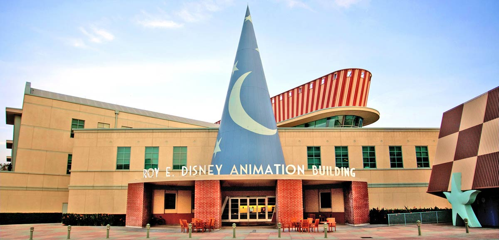

WALT DISNEY COMPANY

OUR MISSION
The mission of The Walt Disney Company is to be one of the world’s leading producers and providers of entertainment
and information. Using our portfolio of brands to differentiate our content, services and consumer products,
we seek to develop the most creative, innovative and profitable entertainment experiences and related products in the world.
OUR BUSINESSES
The Walt Disney Company, together with its subsidiaries and affiliates, is a leading diversified international family
entertainment and media enterprise with the following business segments: media networks, parks and resorts, studio entertainment,
consumer products and interactive media.
LEADERSHIP
Disney’s leadership team manages the world’s largest media company and are the visionaries behind some of the most respected and
beloved brands around the globe. Their strategic direction for The Walt Disney Company focuses on generating the best creative
content possible, fostering innovation and utilizing the latest technology, while expanding into new markets around the world.
|